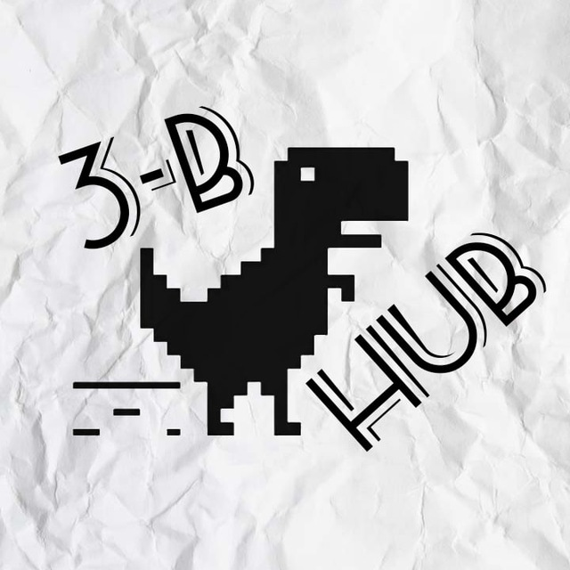

Група АКІТ
Моя група - це невеличке співтовариство, але при цьому неймовірно різноманітне та насичене різними індивідуальностями. Нас нараховує майже 30 осіб, що вражає, оскільки зазвичай на нашій спеціальності об'єднується набагато менше студентів (половина від нашої кількості).
Хоч іноді виникають конфлікти та розбіжності, та то не так страшно. Що стосується людей в групі, то я бачу тут безліч розумних, талановитих особистостей, кожна з яких має свої унікальні бажання та мрії. Ця різноманітність робить нашу групу особливою та цікавою, дозволяючи кожному відкривати для себе щось нове та неповторне (ну звичайно дря того хто бажає щось відкривати).
Піксельний динозаврик, що раніше прикрашав стіни нашого комп'ютерного класу, тепер став символом нашої групи й додатково розмістився заставкою нашого телеграм чату: 